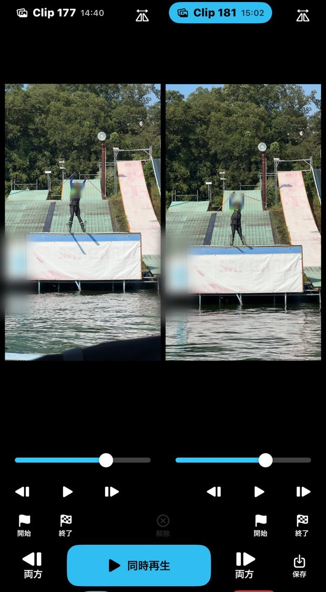
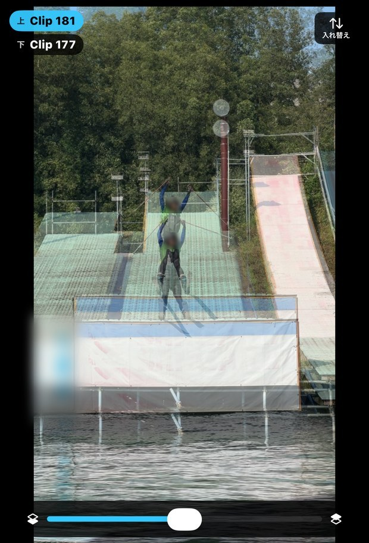
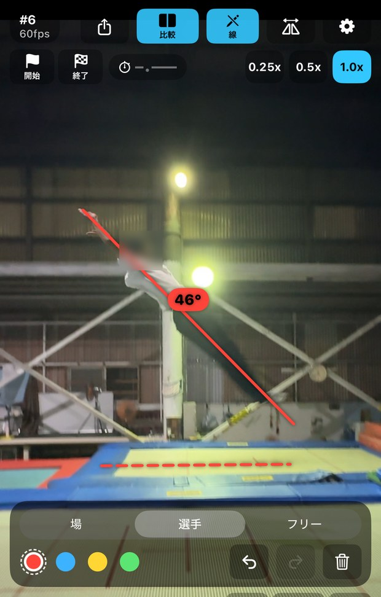

撮る
アプリの中で撮れます。撮った映像は、そのまま次の操作に使えます。
スポーツの現場で、撮った動きをその場で確かめるための iPhone / iPad アプリ。
公開準備中

撮ったあと、すぐ見たい。
滑り終わった選手を待たせずに、いま撮った映像をその場で見返したい。
前の一本と、今の一本を比べたい。
良かったときと今とで何が違うのか、その場で並べて見たい。
同じところを見ながら話したい。
コーチが言っている「ここ」と、選手が思っている「ここ」を一致させたい。
一人で練習しているとき、誰もカメラを操作できない。
自分の動きを撮りたくても、録画を止めて再生する人がいない。
アプリの中で撮れます。撮った映像は、そのまま次の操作に使えます。
録画を止めた瞬間に、その場で再生できます。撮ったものを探す手間がありません。
1枚ずつ進めて、見たい瞬間で止められます。「ここ」と指させます。
速度を落として、動きの順番を追えます。
2本を並べて同時に再生できます。前回と今回、選手と手本。並べて初めて分かることがあります。
並べ方は3つ。左右、上下、重ねる。重ねるときは上の映像を指で動かして位置と大きさを合わせ、濃さを変えられます。

1本の映像を見ながら、画面に線を引いて伝えられます。言葉で足りないところを、絵で補えます。

そのほかにも
写真アプリから読み込む
写真アプリに入っている動画を読み込んで、同じ画面で見られます。
書き出し
見た映像を写真アプリに保存したり、ほかのアプリで共有したりできます。比較した2本は、並べたまま1本の動画として保存できます。
お気に入り／お手本
よく見返す一本をお気に入りに、基準にしたい一本をお手本に登録できます。比較を開くと、お手本が自動で相手側に入ります。選手ごとにお手本を分けて持てます。
UIカスタマイズ
使わないボタンを消し、位置・順序・大きさを自分の使い方に合わせられます。手袋のままでも押せるように、ボタンを大きくすることもできます。
すでに使える機能ですが、実際の練習で使いながら、より安定して使えるよう改善を続けています。
録画ボタンを押さなくても、少し前の動きを見返せます。設定した秒数だけ遅れた映像が流れているので、跳んだ直後に画面を見れば、いまの一本が映っています。大会など、次々に人が跳ぶ場面でも、自分の一本だけを見返せます。
画面に触れれば止まり、前後を探せます。残したい一本だけ「残す」で保存します。残さなかった分は、リプレイを抜けると消えます。
端末を置いておくだけ。動きを見つけて演技ごとに区切り、一本終わるたびに再生します。誰も操作しなくていい。
台が複数ある場所でも、端末は1台だけ。跳ぶ台は3つまで、台ごとに分けて記録します。
渡辺大晴コーチが、一人でウォータージャンプの練習をしていました。自分の動きを確かめたくて、iPadの標準カメラを回しっぱなしにして撮っていました。
そこで連続モードを使ってみました。端末を置いたまま、アプリが動きを見つけて演技ごとに区切り、一本終わるたびに自動で再生しました。
操作した回数はゼロです。跳んで、降りて、画面を見て、また跳ぶ。それだけで練習が回りました。
渡辺コーチは、その日のうちにこう書いていました。
「動画を撮りっぱなしにする必要もなく自動で検知して撮影。別の動画と比較もできて、便利なアプリでした」
作った機能が、実際の現場でこう使われました。
連続モードは現在も改善を続けています。安定してご案内できる状態になったら、このページでお知らせします。
FrameReplayは、映像を見やすくするための道具です。良し悪しを判断するのは、見ている人です。
点数をつける機能、自動で良し悪しを判定する機能は、意図的に入れていません。コーチが見て、選手が見て、二人で話す。そのための時間を作るのがこのアプリの役目です。
FrameReplayは、MIC（Mogul Improvement Community）のコーチが現場で必要になって作ったアプリです。いまもモーグル、ウォータージャンプ、トランポリンの練習で使いながら、直し続けています。
モーグル専用のアプリではありません。映像で動きを確かめるスポーツであれば、競技を問わず使えます。
MICについて → mogul-mic.com
公開準備中です。
現在、App Storeでの公開に向けて準備を進めています。
公開したら、MICの公式LINEとInstagramでお知らせします。
対応：iPhone / iPad